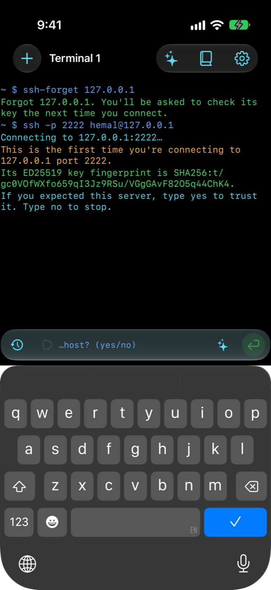
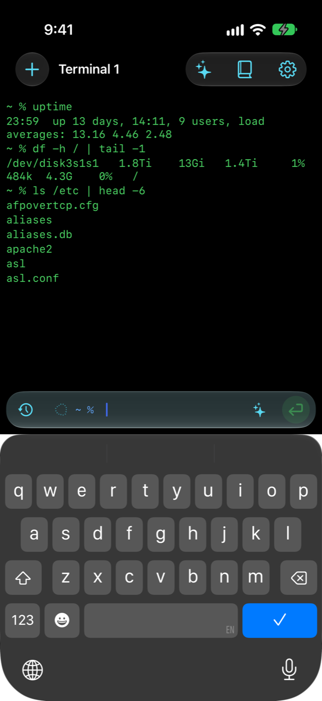

SwiftyTerminal: Terminal Shell
SSH Client & Linux Commands · App Store · updated 15 Nov 2026
What is new in 1.7
ssh and scp now connect to real servers. ssh user@host opens a shell on a Mac, a Raspberry Pi or a Linux server, and ssh user@host uptime runs one command and returns. Login works with a password, or with a key: ssh-keygen creates an Ed25519 key that stays in the device Keychain, and ssh-copy-id installs it on the server. The first connection shows the server's SHA256 fingerprint and asks whether to trust it; a changed host key is refused. scp copies one file to or from a server. Ctrl-C, Ctrl-D and exit work. Full-screen programs such as vim and top, and servers that offer only RSA keys, are not supported yet.
Facts
- Version
- 1.7 (build 2026111401), built with Xcode 27.1, SSH on SwiftNIO SSH
- Platforms
- iPhone and iPad, including the iPhone Duo fold layouts
- Languages
- English (US, UK, Australia, Canada) and Spanish (Mexico)
- Price
- Free; ssh, scp and ssh-copy-id are part of SwiftyTerminal Pro, a one-time purchase
- Privacy
- The app connects straight to the server the user names. No relay, no account. Keys stay in the Keychain on this device only.
- Window
- 7 Dec 2026 to 10 Jan 2027
- Developer
- Hemal Modi, one developer in Dubai
Screens
Simulator captures of the 1.7 build connected to an OpenSSH 10 server. No marketing frames.

